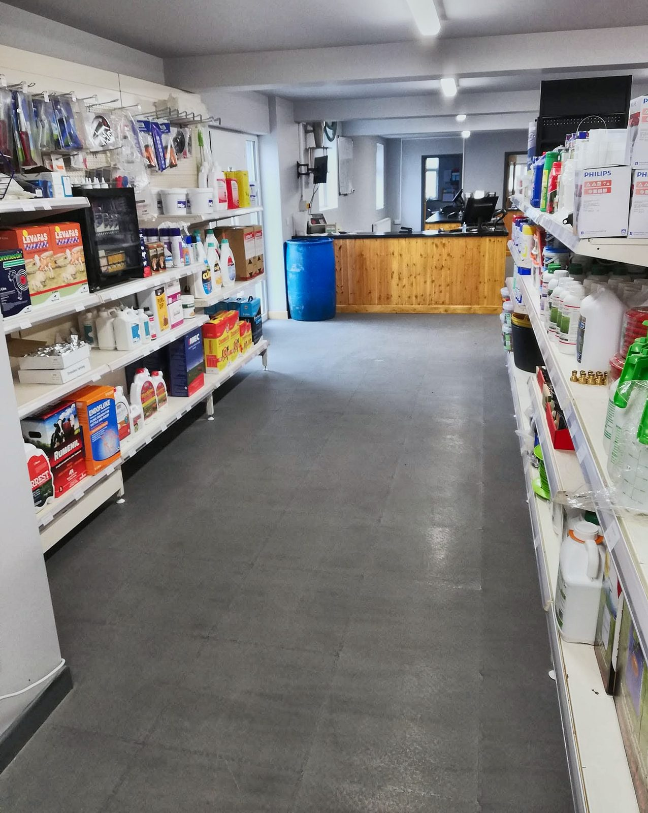
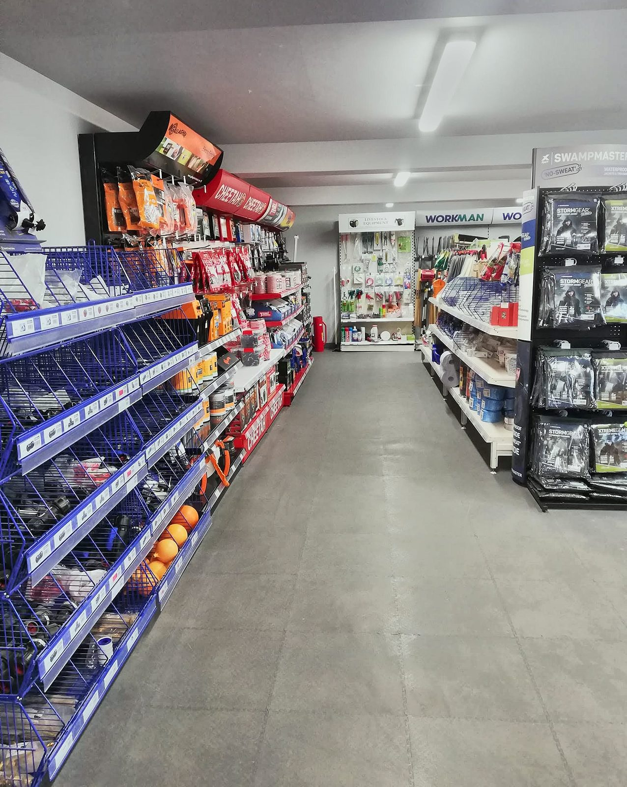
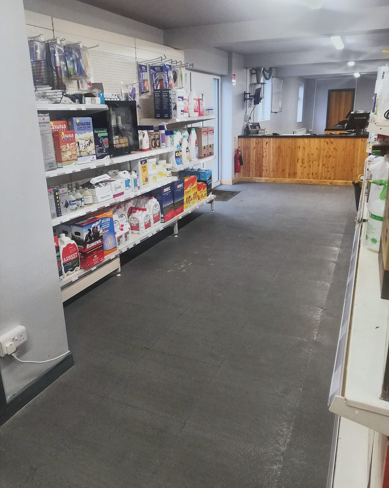
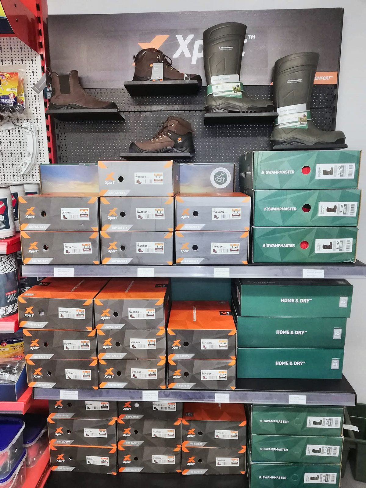

Camolin, Co. Wexford · Family run since 1985
Everything for the farm, and the advice to go with it
Fertiliser, sprays, seed, feed straights, minerals, animal remedies and hardware, all in one yard. Our qualified agronomists will walk your crops and help you get the most from what you buy.
What we do
More in the yard than you might think
A lot of customers know us for one or two things, but here is the full picture.
Agronomy advice
Crop walks, spray programmes and fertiliser plans from qualified agronomists.
See more →Fertiliser
A broad range, including many of our own custom blends.
See more →Crop protection
Herbicides, fungicides and insecticides from a DAFM-registered store.
See more →Seed
Cereals, beans, rape, forage crops and grass seed.
See more →Feed & minerals
Straights ground in our own mill, house ration recipes and Agri Choice minerals.
See more →Animal health
A full veterinary range, with prescriptions sorted in store through VetPal.
See more →Agri hardware
The yard and farm essentials you'd otherwise drive for.
See more →Grain intake
We take in barley, wheat, oats and beans at harvest.
See more →Call in
A shop worth the stop
Aisles of animal health, hardware, workwear and yard supplies, with someone at the counter who knows what you need.




Our story
A family business since 1985
Michael O'Sullivan started the business in Camolin in 1985. Forty years on, it's still run by the family, serving farmers around Camolin and further afield.
We've grown a lot since then. Alongside fertiliser and feed we now have our own feed mill, qualified agronomists, a full veterinary range, a shop full of hardware, and a second branch in Asdee, Co. Kerry.
1985
Founded
By Michael O'Sullivan, in Camolin.
2
Branches
Camolin, Co. Wexford, and Asdee, Co. Kerry.
Advice first
Talk to an agronomist before you spend
We're qualified agronomists, not just a counter. Tell us what's happening in the field or the shed and we'll come out, look at it and give you a written recommendation.
- Crop walks with a written recommendation you can act on
- Spray programmes for cereals, beans and grassland
- Soil samples sent for analysis, and a fertiliser plan built from the results
- Rations and mineral rates worked out for your stock and silage
- Help choosing the right wormer for the job
Ground in Camolin
Feed straights, with the rations to match
We grind barley, beans and oats in our own mill and sell them as straights, along with maize and soya. Our house ration recipes show you how to put them together for beef, dairy and sheep, and several of the beef recipes are 100% native grain.
All feed ingredients are supplied as straights, not pre-mixed rations. Minerals are sold separately and are not mixed through the straights.
14
House ration recipes
Beef, dairy, sheep and hogget, from 14% to 24% protein.
100%
Native grain
The GP Beef 14% and 16% recipes are all barley, beans and oats.
6
Straights stocked
Barley, beans, oats, maize, soya bean meal, soya hulls.
UFL
Worked out properly
We check protein and energy against your stock and silage.
Our group's own brand
Agri Choice is our buying group's own brand: high quality products, bought together at the best prices.
Agri Choice in our yard
- Mineral bags and mineral buckets
- Cubicle lime: Hydrated Blend, Super P and standard
- Silage wrap and silage covers
Find us
Baylands, Camolin
Put Y21 T189 into your phone and it'll bring you to the gate.